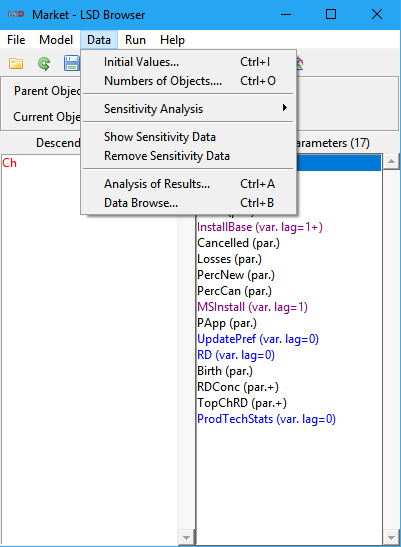

Menu "Data"
This menu deals with all the numerical aspects of the model,
either
by setting the values required to start a simulation, or by
dealing
with
the values resulting from a simulation run.

Other Menus of the Browser:
Menu File
Menu Model
Menu Run
Menu Help
Menu "Data" Entries:
Set number of Objects
This option allows the user to change the number of objects in the
model. This operation can be quite complicated for models with
complex
structures, and LSD offers two options:
1.
Set all types of objects. This
options
shows every single grouping of objects, allowing to decide their
number. However, for large models, this option can be slow and
inefficient.
2.
Set only this type of objects.
This option allows quickly to decide the number of objects of the
type
shown by the browser. All groups of objects of this type will be set
at
the same number.
See the links above for further details on the two options.
Save
Results
Shortcut: Ctrl+z
Saves the results of the latest simulation run. This entry
creates a
LSD result file and a LSD model file with the same name (and
extensions
.res and .lsd respectively) containing the results of the
simulation to
be used with the module Analysis of
Result
and the model configuration that produced those results. These
files
permit
a user to load the saved configuration obtaining exactly the
results
contained
in the result file, even if (pseudo) random functions are used.
Sensitivity Analysis
Sensitivity analysis allows the user to generate one or model
configuration(s) with many copies of the current model each with a
different combination of elements' values. This is typically done to
test the behaviour of the model for many different parameters'
values. For example, suppose your model includes parameter A and
parameter B (each of them is represented with only one copy in the
model).
If you want to test the model with all combinations of A assuming
values {1; 3; 5; 7} and of B assuming the values {2; 4}, then you
need to generate 8 (4x2) different combinations and assign to each a
combination of the two parameters.
When the number of parameters involved in the sensitivity analysis
is large and/or the number of values for each element is large, then
the assigment of the values can be difficult. LSD can automatically
generate all the configurations each containing one combination of
the specified parameters.
The first step consists in defining the elements (parameters, lagged
variables or lagged functions) to be involved by using the
appropriate
Set All function
from the menu
Initial Data. When all
elements have been indicated and their values inserted the user can
choose between two types of configurations to be simulated in
parallel or sequentially. Note that the user can mix the two
systems: firstly indicating a sub-set of the elements to include in
the sensitivity analysis and use them to generate a single
configuration (parallel). Then indicating the remaining set of
elements to perform sequential sensitivity analysis
Parallel
In parallel sensitivity analysis the system generates a single
configuration containing as many copies as necessary. In the example
above the system would generate 8 different copies of the object
containing the parameters A and B, each copy including a different
combination of their values.
Sequential
When the number of copies required to perform the sensitivity
analysis is too large for a single simulation run it is possible to
generate many separate configurations, each independently stored in
separate files, that can be run using the sequential option in the
NO WINDOW version of LSD model
programs.
Notice that the LSD model program uses the information inserted by
users for the sensitivity analysis but does not store them, so
uploading a new configuration all the information is lost.